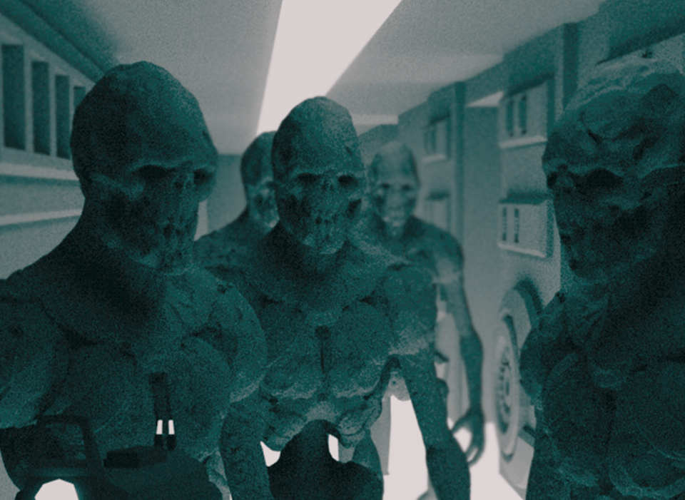

Bees are flying insects closely related to wasps and ants, known for their role in pollination and, in the case of the best-known bee species, the western honey bee, for producing honey and beeswax. Bees are a monophyletic lineage within the superfamily Apoidea and are presently considered a clade, called Anthophila. There are over 16,000 known species of bees in seven recognized biological families.[1][2] They are found on every continent except Antarctica, in every habitat on the planet that contains insect-pollinated flowering plants.
Some species including honey bees, bumblebees, and stingless bees live socially in colonies. Bees are adapted for feeding on nectar and pollen, the former primarily as an energy source and the latter primarily for protein and other nutrients. Most pollen is used as food for larvae. Bee pollination is important both ecologically and commercially. The decline in wild bees has increased the value of pollination by commercially managed hives of honey bees.
Like all elementary particles, the muon has a corresponding antiparticle of opposite charge (+1 e) but equal mass and spin: the antimuon (also called a positive muon). Muons are denoted by μ−and antimuons by μ+. Muons were previously called mu mesons, but are not classified as mesons by modern particle physicists (see § History), and that name is no longer used by the physics community.
Muons have a mass of 105.66 MeV/c2, which is about 207 times that of the electron. Due to their greater mass, muons are not as sharply accelerated when they encounter electromagnetic fields, and do not emit as much bremsstrahlung (deceleration radiation). This allows muons of a given energy to penetrate far more deeply into matter than electrons since the deceleration of electrons and muons is primarily due to energy loss by the bremsstrahlung mechanism. As an example, so-called "secondary muons", generated by cosmic rays hitting the atmosphere, can penetrate to the Earth's surface, and even into deep mines.
Some species including honey bees, bumblebees, and stingless bees live socially in colonies. Bees are adapted for feeding on nectar and pollen, the former primarily as an energy source and the latter primarily for protein and other nutrients. Most pollen is used as food for larvae. Bee pollination is important both ecologically and commercially. The decline in wild bees has increased the value of pollination by commercially managed hives of honey bees.
Because muons have a very large mass and energy compared with the decay energy of radioactivity, they are never produced by radioactive decay. They are, however, produced in copious amounts in high-energy interactions in normal matter, in certain particle accelerator experiments with hadrons, or naturally in cosmic ray interactions with matter. These interactions usually produce pi mesons initially, which most often decay to muons.
Bees are flying insects closely related to wasps and ants, known for their role in pollination and, in the case of the best-known bee species, the western honey bee, for producing honey and beeswax. Bees are a monophyletic lineage within the superfamily Apoidea and are presently considered a clade, called Anthophila. There are over 16,000 known species of bees in seven recognized biological families.[1][2] They are found on every continent except Antarctica, in every habitat on the planet that contains insect-pollinated flowering plants.
As with the case of the other charged leptons, the muon has an associated muon neutrino, denoted by νμ, which is not the same particle as the electron neutrino, and does not participate in the same nuclear reactions.